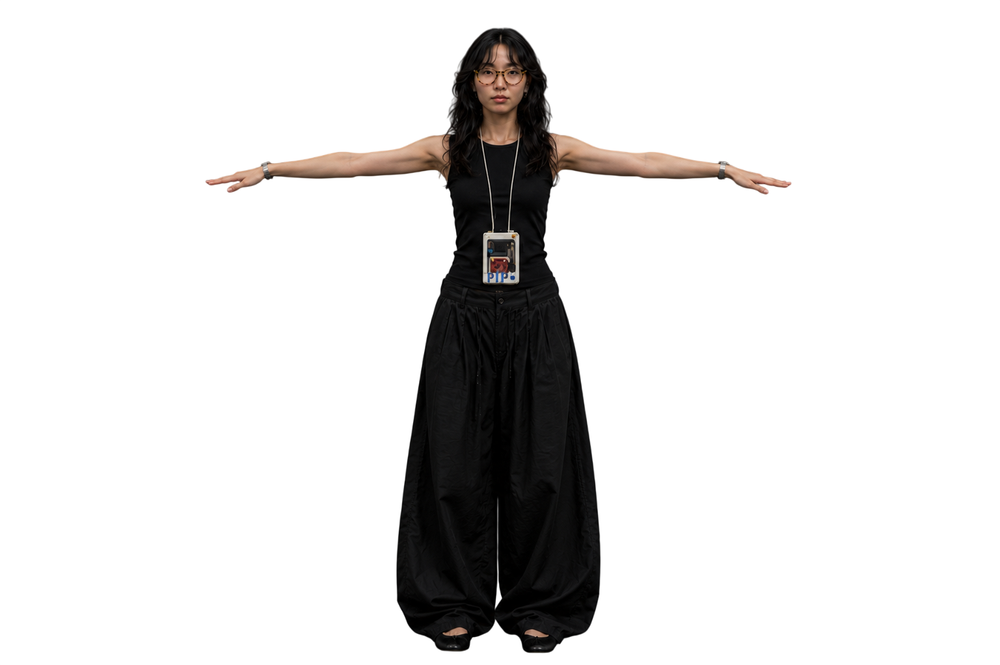
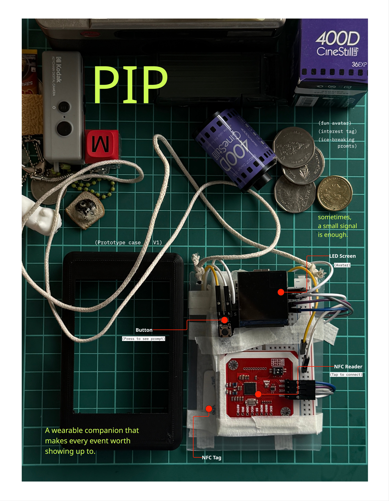

A wearable companion that makes connecting at events effortless.
PIP is a speculative wearable device designed to remove the friction from meeting people at events. Instead of awkward introductions or swapping details on phones, PIP uses a tap-to-connect interaction — two devices touch, a compatibility match is calculated, and a conversation starter is surfaced instantly.
The project explores how physical interaction design can reduce social anxiety in high-density social environments, turning a passive accessory into an active social catalyst.
"How might we help strangers make new friends at company and business social events?"
Business event organisers and introverts — people who attend or run high-density social events (conferences, mixers, company socials) but find the "first word" the hardest part of making a new connection.
Interviews revealed a specific user: introverts who have no problem continuing a conversation — only starting one. Once the ice is broken, they thrive. PIP's job is just to break it.
A tap is more intentional than exchanging handles on a phone. The physical gesture creates a shared moment — a small ceremony that signals mutual willingness to connect.
Research surfaced several potential target groups. We committed to one: socially capable introverts at events. This focus sharpened every design decision that followed.
PIP is an interactive wearable device worn at the event — the core creative solution to the ice-breaking problem. Instead of traditional ice-breakers, which still require someone to find the right topic and push through the awkwardness of starting, PIP skips that step entirely. A simple tap surfaces a compatibility match and a conversation starter, so the hardest part of meeting someone new is already done before you speak.

The physical build, worn on a cord like a badge — quietly present until it's activated by a tap.
Worn like a badge — designed to sit naturally as part of an everyday outfit.
The concept is documented as an interactive digital zine — scroll through to explore the product vision, interaction model, and animated prototype.
Early testing showed people were open to wearing and using the device, and that its value scales with the size of the event — the more people in the room, the more interesting the interaction becomes. PIP feels most compelling at the scale of meeting many strangers in one sitting, rather than a one-off introduction.
PIP is a hardware-software product, which meant designing under real technical uncertainty. The device was still being debugged during the design process — components were in flux, and there was no guarantee certain parts could be removed or replaced.
The key constraint: the auto-wire mechanism had to remain intact. I had to design the cover and interaction model around a component I couldn't change, not the other way around. This pushed me to treat the hardware as a given and focus on what the interaction layer could do independently.
Ahead of the Tech Fest showcase, the limited number of working devices and the ongoing wiring issues meant a fully finished cover couldn't be completed in time. As the person designing the case, I was explicitly asked to work around the exposed wires for the time being rather than wait for a stable hardware revision — the showcase unit reflects that compromise.

Auto-wire had to stay. Cover design and interaction model had to work with it — an unusual constraint that required design thinking to run in parallel with engineering rather than after it.
User interviews were central. Multiple target groups were considered, but research kept pointing to one clear profile — introverts who can hold a conversation, but need help starting one.
A limited number of working devices and unresolved wiring meant the cover couldn't be fully finished before Tech Fest. I was directed to design around the exposed wires rather than wait — a deliberate short-term compromise, not a final design decision.
PIP explores the boundary between product design and interaction design — the device itself is simple, but the interaction model is carefully considered. The tap gesture is universal, low-barrier, and creates a shared moment between two people that a phone screen cannot replicate.
Working under technical constraints turned out to be a useful design exercise — it forced clarity about what the interaction layer needed to do on its own. Building the zine in HTML/Canvas also let me test how the animated interaction model would feel, discovering that the match reveal timing needed to be slower to land emotionally.